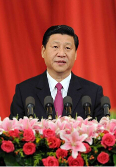

赛事简介
赛事背景

为贯彻落实以习近平总书记为首的党中央提出的治国理政战略方针，深入广泛地反映中华民族伟大复兴的光辉成就与社会繁荣，提高国民素质和全社会文明程度，根据习近平总书记的重要指示：“要大力宣传中华民族的优秀文化和光荣历史，不让廉价的笑声、无底线的娱乐、无节操的垃圾淹没我们的生活；文运同国运相牵，文脉同国脉相连。通过多种宣传方式，加强爱国主义教育，让群众爱听爱看、喜闻乐见并产生共鸣。用具有广泛参与性的方式推广开来，综合运用大众传播、群体传播、人际传播等多种方式展示中华文化魅力。引导人民树立正确的历史观、民族观、国家观、文化观，推动社会主义文化大发展、大繁荣，努力建设社会主义文化强国，实现中华民族伟大复兴中国梦。为我们党团结带领人民实现民族独立、人民解放、国家富强、人民幸福作出重要贡献。”
赛事宗旨
拥有百年史的中国电影，兴起于八十年代的中国电视剧，多少佳作惹得万人空巷；多少故事令人回味感叹；多少角色久久不能忘怀；多少主题歌曲余音渺渺经年传唱。我们的国歌《义勇军进行曲》就是出自于三十年代的电影《风云儿女》，其意义之重、感情之深恰是无言自明。
今天，我们举办《中国影视歌曲歌手大赛》文化系列活动,旨在继承中华民族优秀文化、传播正能量，大力弘扬爱国主义精神并将宣传至全球诸多国家。
此平台的建立也为扶持文艺新人、促进新媒体传播下的中国电影文化艺术交流、打造最具影响力和正能量的与时俱进的文化平台提供强大动力，为完成习近平总书记提出的实现伟大复兴中国梦、将中国传统文化走向世界起到助推作用。
传播渠道
电视 广播 网络（手机）平面
传播效果
本次赛事预计有效受众人群将高达至少12亿人次（含国际、国内、省内各种媒体宣传）。
电视媒体预计受众人群将高达8亿人次。
电台媒体预计有效受众人群将高达3000万人次。
网络（手机）媒体预计有效受众人群将高达4亿人次。
平面媒体预计有效受众人群将高达3000万人次。
社会效应
《中国影视歌曲歌手大赛》组委会积极响应习近平总书记的号召，并得到了业界领导的高度重视与大力支持。参赛者不限国籍、地域、性别，全民共同参与。阵容强大，大场景、大画面。同时，组委会还将邀请老一辈表演艺术家、歌唱家以及中国影视歌曲原创词、曲作者、导演、表演者等与观众见面。组委会外景摄制组还将拍摄出的影片故事原型人物的花絮呈现给观众，充分展现出全中国人民的精神风采。从而使十几亿中国人民能够通过此项赛事活动回顾历史、培养爱国主义情操，认真地教育好下一代。使我国的影视文化艺术事业及音乐歌唱事业真正地能够做到为社会的和谐稳定发展、为实现中华民族伟大复兴中国梦做出更大的贡献。
可以预见，《中国影视歌曲歌手大赛》赛事文化系列活动定将成为我国文化领域影响力最大、辐射范围最广、参与人数最多、弘扬主旋律力度最强的文化盛事！
全国参与区域
（以省、自治区、直辖市、特别行政区为单位)
华北：北京 天津 河北 山西 内蒙古
东北：辽宁 吉林 黑龙江
华东：上海 江苏 浙江 安徽 福建 江西 山东
华南：广东 广西 海南
华中：河南 湖北 湖南
西南：重庆 四川 贵洲 云南 西藏
西北：陕西 甘肃 青海 宁夏 新疆
台湾 香港 澳门
参赛内容及流程
参赛条件
参赛选手8-70周岁、不分专业与非专业，不限国籍、地域、性别、身高。身体健康，能够遵守组委会制定的各项规章制度并积极参加赛事推广活动和各项慈善公益活动。
参赛内容
1，自我介绍 通过自我介绍，增加评委对选手的了解与认识。
2，参赛歌曲 自备影视歌曲3首，每首时间不超过5分钟。
3，知识问答 回答评委提出的相关知识。
参赛流程
报名 → 海选 → 初赛 → 复赛 → 决赛 → 颁奖晚会
各赛区选出370名获奖选手（130名+合唱组240名）参加全国比赛。
赛事进程（暂定）
2015年9月-2017年7月 全国各赛区新闻发布会 报名 比赛 宣传活动
2017年7月-2017年9月 全国比赛 颁奖晚会
组织签约
全国赛事组委会总部将通过建立人才信息库，对具有发展潜质的选手进行签约。
（1）组织优秀选手进行国内、国外巡演。
（2）组织影视机构、音乐制作公司挑选优秀选手演唱影视主题歌曲、插曲以及音乐制作等。
（3）参加影视剧拍摄。
（4）国内外知名企业、广告公司机构代言企业广告等。
分组形式
少儿组 8-17周岁 青年组 18-39周岁 中年组 40-59周岁 老年组 60-70周岁
独唱组 1人 小组唱组 2-20人 合唱组 40-60人
宣传活动
《中国影视歌曲文化系列宣传活动艺术团》将有计划地在全国（全球）范围内进行“弘扬中华传统文化、实现伟大中国梦”演艺宣传活动。
艺术团将深入基层到敬老院、孤儿院、部队、学校、工厂、矿区、油田、农村等多地进行慰问演出。组委会将邀请著名表演艺术家、歌唱家、著名词、曲作者、导演、书画家、影视明星、歌星、歌唱演员、戏曲、舞蹈演员等同台义演。
宣传活动期间，政府、企业可共同参与。艺术团还将到企业现场与企业领导、员工们共同进行爱国主义教育文化宣传活动。
艺术团国际演出部将把中国文化传统艺术带出国门，为完成习近平总书记提出的将中华传统文化走向世界贡献力量,届时，诸多媒体将进行跟踪报道。